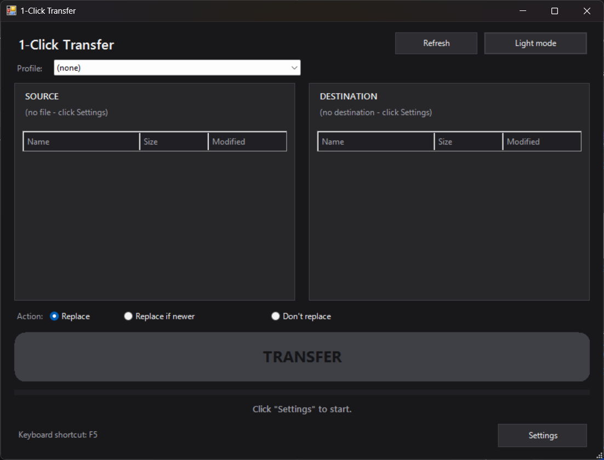

Envie um arquivo pré-escolhido para uma pasta local/rede ou um servidor FTP — com um único clique. App nativo para Windows 10/11, tema escuro, perfis e interface em Português e Inglês. Send a pre-chosen file to a local/network folder or an FTP server — with a single click. Native Windows 10/11 app, dark theme, profiles, and a Portuguese/English interface.
⬇ Baixar para Windows ⬇ Download for Windows
Tela inicial do app (modo escuro) App home screen (dark mode)
Botão grande TRANSFERIR. Ou um atalho de teclado configurável.One big TRANSFER button — or a configurable keyboard shortcut.
Pasta local/rede ou servidor FTP/FTPS, com navegador de pastas remotas.Local/network folder or FTP/FTPS server, with a remote folder browser.
Salve vários destinos (incl. FTP com senha) e troque num instante.Save multiple destinations (incl. FTP with password) and switch instantly.
Modo escuro/claro e interface em Português ou Inglês.Dark/light mode and a Portuguese or English interface.
A senha do FTP fica criptografada (DPAPI), só no seu usuário.The FTP password is encrypted (DPAPI), tied to your Windows user.
Um .exe pequeno, sem instalação. Nada precisa ser instalado.A tiny .exe, no installation required.